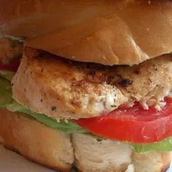

Recipe for chicken sandwich

Chicken + bread = Deliciousness.
Enjoy the recipe below!
Recipe on the website.
Ingredients
- 4 ounces cream cheese, softened
- 4 teaspoons dried dill weed, divided
- 4 tablespoons minced garlic, divided
- 2 skinless, boneless chicken breast halves
- 2 tablespoons butter, softened
- 1 small tomato, sliced
- 2 leaves lettuce
- 4 thick slices French bread
Steps
- Mix cream cheese, 2 teaspoons dill, and 2 tablespoons garlic together in a medium bowl; set aside.
- Season chicken with remaining garlic and dill.
- Melt 1 tablespoon butter in a skillet over medium heat. Add chicken and cook until no longer pink in the center and the juices run clear, about 8 minutes per side. An instant-read thermometer inserted into the center should read at least 165 degrees F (74 degrees C). Remove from the pan.
- Butter one side of each slice of bread with remaining butter. Toast buttered bread in the skillet until golden, about 2 minutes.
- Remove bread from the skillet. Spread 1/2 of the cream cheese mixture onto the unbuttered sides of 2 bread slices. Top each slice with lettuce, tomato slices, chicken breast, and remaining bread.